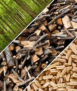
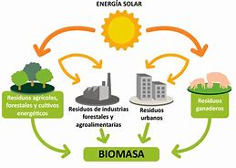
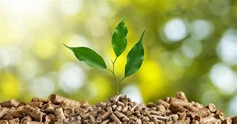
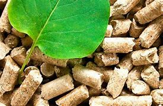
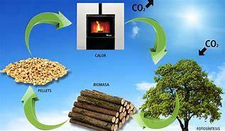

¿Qué es la biomasa?
La biomasa se refiere a la materia orgánica que proviene de plantas y animales. Es una fuente de energía renovable que puede ser utilizada para producir electricidad, calor y combustibles.
La biomasa es un tipo de energía renovable que se obtiene de materia orgánica, como residuos agrícolas, restos de madera, desechos animales y otros materiales biológicos. Esta materia puede ser utilizada para generar electricidad, calor o biocombustibles, como el biodiésel y el etanol.
El proceso de conversión de biomasa en energía implica descomposición, combustión o fermentación, dependiendo del tipo de biomasa y la forma en que se desea utilizar. La biomasa es una opción sostenible, ya que utiliza residuos que de otro modo se perderían y, al ser parte del ciclo natural de carbono, su uso contribuye a la reducción de emisiones de gases de efecto invernadero.
Además, la biomasa puede ayudar a promover la economía local, creando empleos en la recolección, procesamiento y producción de energía. Sin embargo, es importante gestionar su uso de manera sostenible para evitar la deforestación y asegurar la conservación de ecosistemas.
Fuentes de Biomasa
 La biomasa se puede clasificar en varias categorías:1.-Residuos Agrícolas: Restos de cultivos, como paja, tallos y cáscaras.
2.-Desechos Forestales: Recortes de árboles, ramas y restos de la industria maderera.
3.-Residuos Orgánicos: Desechos de alimentos y materiales biodegradables provenientes de hogares y restaurantes.
4.-Cultivos Energéticos: Plantas cultivadas específicamente para la producción de energía, como la caña de azúcar, el maíz y el switchgrass.
5.-Lodos de Aguas Residuales: Materia orgánica de plantas de tratamiento de aguas.
Proceso de Conversión

Existen varios métodos para convertir la biomasa en energía:
1.-Combustión**: La biomasa se quema para generar calor, que puede usarse directamente o para producir vapor y electricidad.
2.Digestión Anaeróbica: Los microorganismos descomponen la materia orgánica en ausencia de oxígeno, produciendo biogás (una mezcla de metano y dióxido de carbono) que se puede utilizar como combustible.
3.-Gasificación: La biomasa se calienta en un ambiente con poco oxígeno, convirtiéndose en un gas que puede ser utilizado para generar electricidad o como materia prima para biocombustibles.
4.-Fermentación: Los azúcares de la biomasa se convierten en etanol u otros biocombustibles mediante la acción de microorganismos.
Ventajas de la Biomasa
 1.-Renovabilidad: Es una fuente de energía que puede regenerarse continuamente si se gestiona de manera sostenible.2.-Reducción de Residuos: Aprovechar residuos orgánicos ayuda a disminuir la cantidad de desechos en vertederos.
3.-Emisiones Neutras: Si se gestiona adecuadamente, la biomasa puede considerarse neutra en carbono, ya que el CO₂ liberado durante su combustión es aproximadamente equivalente al que las plantas absorbieron durante su crecimiento.
Desafíos
 1.-Competencia por Recursos: El uso de cultivos energéticos puede competir con la producción de alimentos y afectar la seguridad alimentaria.2.-Deforestación: La extracción insostenible de madera puede conducir a la pérdida de biodiversidad y degradación de ecosistemas.
3.-Emisiones Contaminantes: Aunque la biomasa es más limpia que los combustibles fósiles, su combustión puede liberar contaminantes, por lo que se necesita un manejo cuidadoso.
Aplicaciones
 1.-Generación de Electricidad: Plantas de energía que utilizan biomasa para producir electricidad.2.-Calefacción: Sistemas de calefacción que queman pellets de madera o otros residuos orgánicos.
3.-Biocombustibles: Producción de biodiésel y etanol para su uso en vehículos.
La biomasa es una opción prometedora en la transición hacia un sistema energético más sostenible, pero es esencial implementarla de manera responsable para maximizar sus beneficios y minimizar sus impactos negativos.